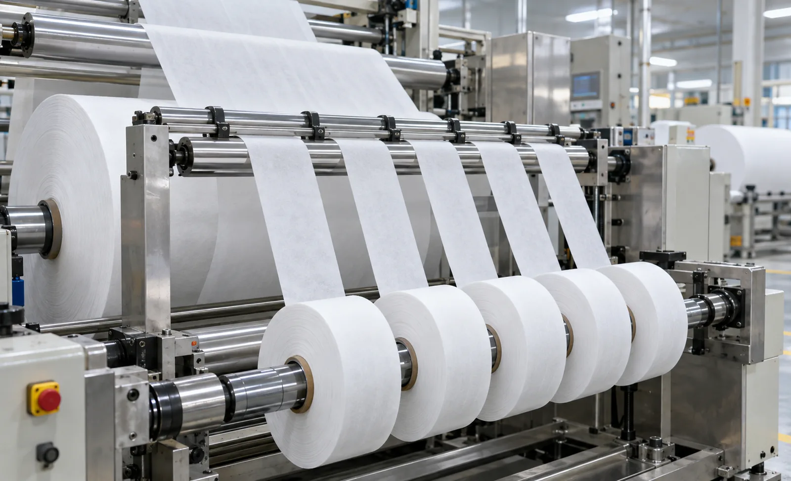
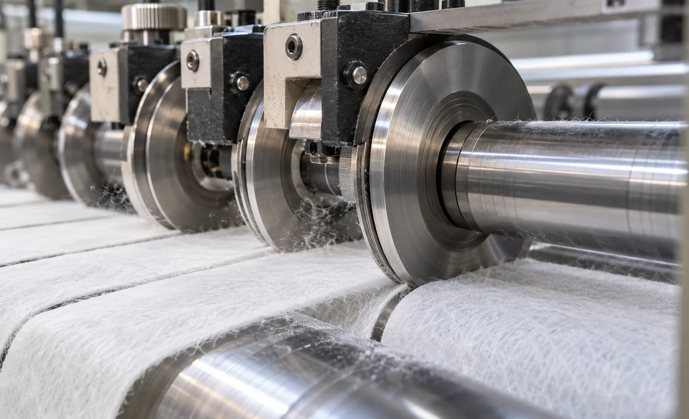

Published September 24, 2026 | By HDPTH Technical Editorial Team

Filter media look simple and behave badly. Meltblown is weak and compressible, spunbond carries direction-dependent stiffness, and carbon composites are abrasive enough to eat knife edges. A machine built for packaging film will produce frayed edges, snapped webs and soft-cored rolls your converting line rejects. Specification starts from the material.
What makes filter media different to cut
Four properties drive the machine specification:
- Low tensile strength: meltblown tears at web tensions films accept routinely, so the tension floor matters more than the ceiling.
- Fibrous structure: the web cuts by separating fibres; a dull or badly gapped knife pulls fibre ends from the edge instead of severing them.
- Bulk and compressibility: thick, airy webs need larger knife overlap, gentler nip and more roller wrap to track straight.
- Abrasive fillers: carbon fillers blunt knives quickly and generate conductive dust that must be extracted, not left to migrate into bearings.
Cutting technology and fibre damage
Rotary shear — two matched circular knives with controlled clearance and overlap — gives the cleanest edge on most media and should be the default for meltblown and spunbond. Razor slitting is cheaper but on fibrous media tends to drag fibres and raise fuzz; crush cutting densifies and damages the edge, so it is reserved for tapes and films. Clearance, overlap, blade sharpness and line speed all shift the balance between a clean shear and a torn edge, as covered in our guide to knife clearance and overlap. A credible supplier proves the edge on your media in a cut trial, grading fuzz over a defined length rather than showing a photograph.
Tension control for low-strength substrates
Express the requirement in material terms: the minimum stable web tension as a percentage of your substrate’s tensile strength, demonstrated in a run. For soft meltblown that floor can be a few tenths of a newton per centimetre of width. Below it the web wanders and wrinkles; above it the web elongates and the media’s filtration performance changes. Closed-loop load cells or dancers, independent zone control and smooth compensation as the unwind diameter changes are the hardware behind the number. Our guide on tension zone architecture compares the control schemes suppliers offer.
Edge quality: fuzz, nicks and measurement
Edge defects are the quality signature of media slitting. Fuzz — loose fibre ends standing off the cut edge — collects in pleating equipment and sheds lint into filters; nicks and angle cuts create weak points that break during conversion. Specify how edges will be judged: a fuzz grade or count over a defined length, observed with magnification, agreed in writing before the order. Width tolerance alone proves nothing about edge quality; our slit width tolerance guide covers measurement.
Rewind density and roll formation
Filter rolls are usually wound softer than film rolls so air stays in the structure and the media is not crushed. Density is controlled by torque and nip, not by pulling the web tight: centre-surface winding decouples roll torque from web tension, lay-on pressure controls how firmly each layer lands, and programmable taper-tension profiles let density vary through the roll on purpose. The proof is measurement — roll hardness profiles from core to outer wrap, as our roll hardness testing guide details. Rolls that go out-of-round in storage or telescope during unwinding are usually a winding-control failure.
| Buying decision | What to specify | Why it matters on filter media |
|---|---|---|
| Cutting method | Rotary shear with adjustable clearance and overlap; razor only where the trial proves it | Shear severs fibres cleanly; razors and crush wheels raise fuzz and damage edges |
| Tension floor | Minimum stable tension stated as a fraction of your media’s tensile strength | Meltblown breaks long before a film-rated tension system reaches its range |
| Knife life | Hardened or coated blades, and a stated knife life on carbon-loaded media | Abrasive fillers blunt blades fast, and dull blades cause fuzz |
| Winding | Centre-surface torque control, adjustable nip, programmable taper-tension recipes | Soft filter rolls need density built by torque and nip, not by web tension |
| Awareness of dust | Extraction at the cutting zone, sealed bearings, easy-clean surfaces | Carbon dust is conductive and abrasive; it migrates into drives and bearings |
| Acceptance | Cut trial plus FAT on your media: width, fuzz grade, hardness profile at speed | Generic demo material hides exactly the problems you are buying against |

Slitting filter media?
Send HDPTH your media type, basis weight, widths and target roll size. We will configure tension zones, knives and winding for your material and quote the machine with an acceptance test built around it.
Submit Your Project InquiryFrequently asked questions
Why does filter media fuzz at the slit edge, and which cutting method reduces it?
Fuzz is loose fibre left at the cut edge when the cutting action tears rather than shears. Rotary shear knives with matched clearances and overlap give the cleanest edge on most media; razor slitting is cheaper but drags fibres on soft webs; crush cutting is avoided because it damages the edge. Knife sharpness, clearance and speed all affect fuzz, so require a cut trial on the actual material.
What tension range should a slitter rewinder have for meltblown and spunbond media?
Specify a range whose lower end is a small fraction of the substrate’s tensile strength, because soft meltblown can only carry a few tenths of a newton per centimetre of width without distorting. The supplier should demonstrate stable handling at minimum tension, show per-zone control with load cells or dancer rollers, and provide smooth taper as the unwind diameter changes.
How is rewind density controlled on soft filter media?
Through torque control, nip pressure and centre-surface winding, not through high web tension. Surface winding decouples torque from tension so the roll builds gently. Lay-on pressure should be adjustable and displayed, and taper-tension profiles programmable per recipe. Density is verified with roll hardness measurements, and acceptance should define acceptable hardness spread on your media rather than a generic number.
Do activated carbon composites need special machine features?
Yes. Carbon-loaded media are highly abrasive, so expect hardened or coated knife surfaces and a realistic knife-life discussion. Carbon dust and lint are also a housekeeping issue: extraction at the cutting zone, easy-to-clean surfaces and sealed bearings near the knives keep the machine serviceable. Composite webs with directional stiffness can curl or telescope, so web handling matters as much as the knives.
What should a filter-media slitter acceptance test include?
Run the buyer’s actual media, not a substitute. Measure slit width across all lanes, grade edge defects such as fuzz and nicks over a defined length, and record roll hardness profiles at start and end of the roll. Include minimum-tension handling, a full-speed run, and knife-change or width-change time if short runs matter. Agree the reject criteria and measurement methods in the purchase contract.
Sources
- INDA: association of the nonwoven fabrics industry — media and converting references
- TAPPI: technical resources on converting, slitting and roll handling of fibrous materials
- ISO 12100: risk assessment and risk reduction for machinery
- OSHA: combustible dust safety publication, relevant to fine fibre dust collection